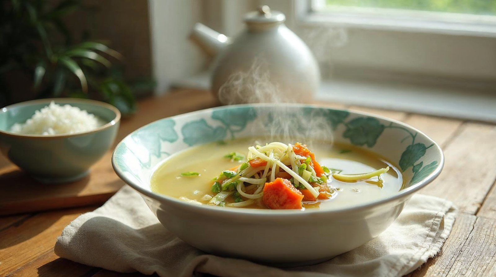
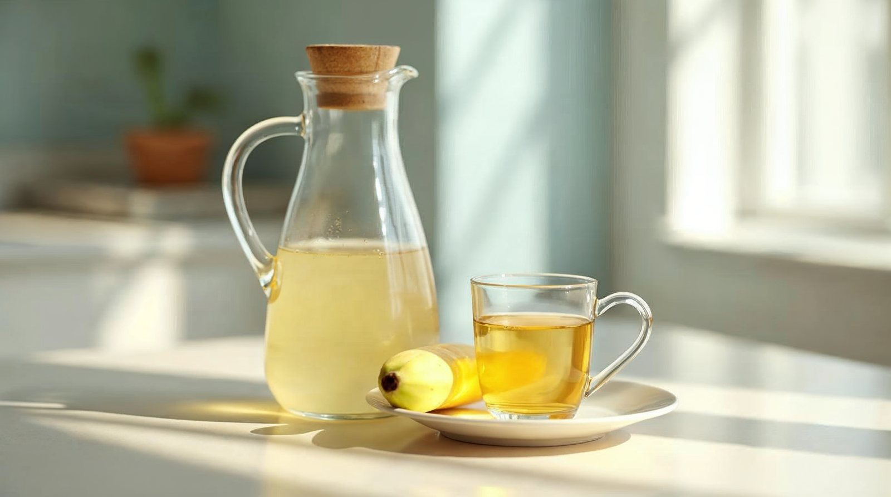
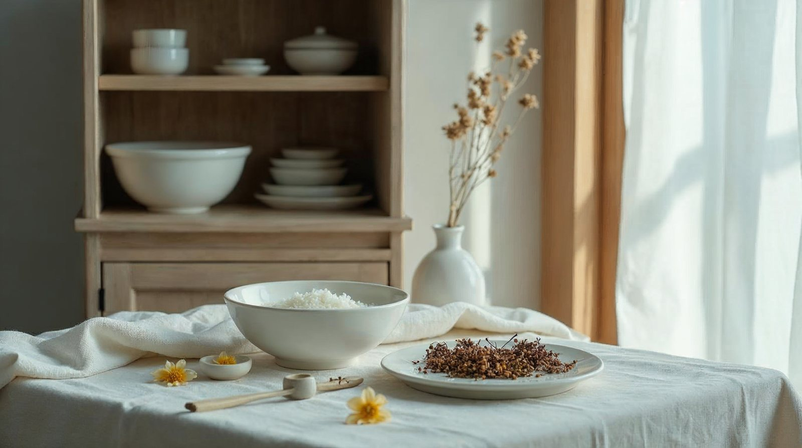

이종호 한의사 감수좋은꿈참사랑한의원 대표원장 (한의사 면허번호 19769)발행 2026-11-26 · 수정 2026-11-27
이 글의 차례
알람이 울리는데 눈꺼풀이 무거워요. 머리는 맥박에 맞춰 지끈거리고, 입안은 바싹 마르고, 명치 아래가 쓰리게 화끈거리죠. 어젯밤 몇 잔째부터 기억이 흐릿한지 더듬어 보다가, 오늘 오전 회의를 떠올리며 한숨을 쉬게 됩니다.
연말이 다가오면 진료실에서 숙취 얘기가 부쩍 늘어요. "예전엔 자고 나면 멀쩡했는데 요즘은 이틀을 가요", "술만 마시면 다음 날 속이 뒤집혀요" 같은 말씀이요. 같은 양을 마셔도 숙취가 예전보다 길어졌다고 느끼시는 분이 많아요. 원래 그래요. 몸이 회복하는 데 걸리는 시간이 예전과 달라지는 거거든요.
숙취는 몸이 지난밤 들어온 알코올을 처리하느라 밤새 일한 흔적이에요. 그러니까 사실은 '다음 날 아침의 해장'과 '술 마시는 방식'은 따로 볼 게 아니라 한 줄로 이어진 얘기예요. 그래서 숙취를 다루는 일은 마시는 방식과 그 전후의 몸 상태를 함께 살피는 일이기도 해요.
저는 술을 끊으시라는 말씀부터 드리지 않아요. 그렇게만 말하면 다들 고개만 끄덕이고 가시거든요. 대신 어떤 날 숙취가 유난히 심했는지, 그날 무엇이 달랐는지를 함께 찾아봐요. 그 차이를 알면 같은 자리에서도 다음 날이 조금은 달라질 수 있어요.
숙취는 어떤 모습으로 오나요?
숙취의 모습은 사람마다 조금씩 다릅니다. 가장 흔한 것은 두통, 입마름, 메스꺼움, 속 쓰림, 피로감입니다. 여기에 어지럼, 손떨림, 가슴 두근거림, 묽은 변, 집중이 안 되는 멍한 느낌이 함께 오기도 합니다.
어떤 분은 머리가 가장 괴롭고, 어떤 분은 속이 가장 괴롭습니다. 머리 쪽이 심한 분은 대개 물이 많이 빠지고 잠이 얕았던 날이 많고, 속 쓰림이 심한 분은 빈속에 마셨거나 맵고 기름진 안주를 함께 드신 날이 많습니다.
숙취는 보통 술을 마신 다음 날 오전에 가장 심하고 오후로 갈수록 가라앉습니다. 다만 나이가 들거나 피로가 쌓여 있을 때는 하루를 넘겨 이틀째까지 이어지기도 합니다. 그럴수록 몸이 회복할 여유가 줄어들었다는 신호로 봅니다.
왜 술을 마신 다음 날 이렇게 힘들까요
알코올은 간에서 처리되는 동안 중간 물질을 만듭니다. 이 물질이 다 분해되기 전까지 몸에 남아 두통과 메스꺼움, 얼굴 붉어짐을 일으키는 것으로 알려져 있습니다. 한꺼번에 많이 마시면 간이 처리하는 속도를 따라가지 못해 이 물질이 더 오래 머뭅니다.
알코올은 소변을 늘려 몸의 물을 빼앗습니다. 술자리에서 화장실을 자주 가는 이유입니다. 그래서 다음 날 입이 마르고 머리가 아프며 몸이 처지는 것은 물이 부족해진 탓도 큽니다.
잠도 숙취를 키웁니다. 술을 마시면 처음에는 쉽게 잠드는 것 같지만, 새벽으로 갈수록 잠이 얕아지고 자주 깹니다. 잔 시간은 길어도 쉰 느낌이 없는 이유입니다. 늦게까지 이어진 술자리라면 잠 자체가 짧아지기도 합니다.
속 쓰림은 알코올이 위 점막을 자극하고 위산 분비를 늘리기 때문입니다. 위와 식도 사이를 조여 주는 힘도 느슨해져 신물이 올라오기 쉽습니다. 맵고 짠 안주, 탄산이 든 술, 늦은 시각의 마지막 한 끼가 더해지면 다음 날 아침 명치가 화끈거리게 됩니다.
같은 양을 마셔도 숙취가 다른 이유
같은 자리에서 같은 양을 마셨는데 누구는 멀쩡하고 누구는 하루를 앓습니다. 체질적으로 알코올을 분해하는 힘이 다르기도 하고, 그날의 몸 상태가 다르기도 합니다. 술을 조금만 마셔도 얼굴이 금세 빨개지는 분은 분해하는 힘이 약한 편일 수 있습니다.
그날의 조건도 크게 작용합니다. 빈속에 마신 날, 잠이 부족했던 주, 감기 기운이 있던 날, 여러 종류의 술을 섞은 날은 숙취가 훨씬 심해지기 쉽습니다. 단 칵테일이나 탄산을 섞은 술은 빨리 마시게 되어 양을 가늠하기 어렵습니다.
나이가 들면 몸의 물이 줄고 간의 처리 속도도 조금씩 느려집니다. 그래서 젊을 때와 같은 방식으로 마시면 다음 날이 더 길어집니다. 숙취가 예전보다 길어졌다고 느끼신다면, 몸이 마시는 방식을 바꿔 달라고 보내는 신호로 받아들이시면 좋겠습니다.

해장에 대해 자주 헷갈리는 것
첫째, 맵고 뜨거운 국물이 속을 풀어 준다는 생각입니다. 땀이 나며 개운한 느낌이 들 수는 있지만, 이미 쓰린 위에는 매운맛이 자극이 될 수 있습니다. 속 쓰림이 심한 날은 맑은 국이나 죽처럼 순한 음식이 더 편할 수 있습니다.
둘째, 해장술이 숙취를 달래 준다는 생각입니다. 잠깐 덜 괴롭게 느껴질 수 있지만, 간은 다시 처음부터 알코올을 처리해야 합니다. 숙취를 뒤로 미룰 뿐 몸의 짐은 더 늘어납니다.
셋째, 진통제를 먹고 자면 다음 날이 편하다는 생각입니다. 일부 진통제는 알코올과 함께 간이나 위에 부담을 줄 수 있습니다. 두통이 심해 진통제를 드셔야 한다면 어떤 약이 괜찮은지 약사와 상의해 보세요.
넷째, 커피로 정신을 차리면 된다는 생각입니다. 커피는 잠깐 깨어 있는 느낌을 주지만 소변을 늘리고 위산 분비를 자극할 수 있습니다. 속이 쓰린 아침에는 물이나 따뜻한 보리차를 먼저 드시는 편이 속에 덜 부담스럽습니다.
숙취의 속 쓰림과 위염·역류는 어떻게 다른가요?
술 마신 다음 날만 속이 쓰리고 하루 이틀 지나 가라앉는다면, 대개 알코올이 위를 잠시 자극한 경우입니다. 반면 술을 마시지 않는 날에도 명치가 쓰리거나 신물이 올라온다면 위염이나 역류성 식도염이 함께 있을 수 있습니다.
밤에 누우면 가슴 안쪽이 타는 듯하고 목까지 신물이 올라오는 느낌은 역류 쪽에 가깝습니다. 식사 전 빈속에 쓰리고 먹으면 잠시 덜해지는 느낌은 위 쪽을 먼저 생각해 봅니다. 이런 구분은 스스로 단정하기보다 진찰과 검사로 확인하는 것이 좋습니다.
속 쓰림이 몇 주 넘게 이어지거나, 연세가 있고 최근 위내시경을 받은 지 오래되었다면 소화기내과에서 검사를 받아 보시길 권합니다. 숙취 탓으로만 넘기다 다른 원인을 늦게 발견하는 일이 없도록 하는 것이 중요합니다.
술이 잦아지면 몸에 쌓이는 것들
숙취는 하루면 지나가지만, 잦은 술자리는 몸에 조금씩 흔적을 남깁니다. 건강검진에서 간 수치가 오르거나 지방간이라는 말을 듣게 되기도 하고, 중성지방과 혈압, 허리둘레가 함께 늘어나기도 합니다.
잠도 영향을 받습니다. 술이 잠을 부르는 것 같아 자기 전 한두 잔을 습관처럼 드시는 분이 있는데, 이런 날이 이어지면 오히려 새벽에 깨는 일이 잦아지고 낮의 피로가 쌓이기 쉽습니다.
소화도 예민해집니다. 술과 기름진 안주가 반복되면 위가 쉴 틈이 없어 평소에도 더부룩하고 입맛이 들쭉날쭉해집니다. 그래서 숙취를 살필 때는 그다음 날만이 아니라 한 달의 술자리 흐름을 함께 봅니다.
먼저 이렇게 여쭙니다
처음 오시면 저는 대략 이런 순서로 여쭙니다. 미리 생각해 오시면 이야기가 수월해집니다.
- 일주일에 술은 몇 번, 한 번에 어느 정도 드시나요?
- 주로 어떤 술을, 어떤 안주와 함께 드시나요?
- 숙취는 머리, 속, 피로 가운데 어디가 가장 괴로운가요?
- 술을 마시지 않는 날에도 속 쓰림이나 신물이 있나요?
- 건강검진에서 간 수치나 위 이야기를 들으신 적이 있나요?
- 드시는 약이나 영양제가 있나요?
술 이야기를 하실 때 양을 줄여 말씀하시는 분이 많습니다. 저는 판단하려고 여쭙는 것이 아니니 있는 그대로 말씀해 주세요. 그래야 지금 몸에 맞는 이야기를 나눌 수 있습니다.

일상에서 먼저 해 볼 수 있는 것
숙취를 줄이는 가장 확실한 방법은 덜 마시는 것이지만, 자리를 피할 수 없는 날도 있습니다. 그런 날은 마시기 전, 마시는 동안, 마신 뒤로 나눠서 챙겨 보세요.
- 술자리 전에 밥이나 단백질 반찬으로 속을 먼저 채우기
- 술 한 잔에 물 한 잔을 곁들이기
- 한 종류의 술로 정하고 섞어 마시지 않기
- 맵고 짠 안주보다 두부, 생선, 채소 위주로 고르기
- 자리를 마무리하는 시각을 미리 정해 두기
- 집에 와서 물 한두 컵 마시고 자기
다음 날 아침에는 물을 조금씩 자주 드시고, 속이 받아 준다면 미음이나 죽, 맑은 국처럼 순한 음식부터 시작하세요. 바나나나 꿀물처럼 부드러운 것도 도움이 될 수 있습니다. 기름진 해장 음식은 속이 어느 정도 가라앉은 뒤로 미루시길 권합니다.
몸을 조금 움직이는 것도 좋습니다. 무리한 운동은 물을 더 빼앗지만, 바깥 공기를 마시며 가볍게 걷는 정도는 머리를 맑게 하는 데 도움이 될 수 있습니다. 그날 밤은 일찍 누워 잠을 채우는 것이 무엇보다 든든한 해장입니다. 낮잠은 길게 자기보다 20~30분 정도로 짧게 끊어야 밤잠을 덜 흐트러뜨립니다.
술자리가 몰리는 시기라면 연달아 마시는 날을 피하는 것도 중요합니다. 술을 마신 다음 날과 그다음 날은 쉬어 가는 날로 정해 두면, 간과 위가 회복할 시간을 벌 수 있습니다.
술자리에서 양을 조절하는 작은 요령
권하는 잔을 거절하기 어려운 자리가 많습니다. 그럴 때는 잔을 비우지 않고 조금씩 채워 두면 계속 따르는 일이 줄어듭니다. 건배 때만 입을 대고, 그 사이에는 물이나 차를 손에 들고 계시는 것도 방법입니다.
자리에 가기 전에 오늘은 몇 잔까지라고 숫자를 정해 두시면 좋습니다. 마음속으로만 정하기보다 함께 가는 동료에게 미리 말해 두면 지키기가 한결 쉬워집니다. 2차, 3차로 이어지는 자리는 처음부터 빠질 시각을 정해 두세요.

한의원에서 함께 살필 수 있는 경우
- 술 마신 다음 날 속 쓰림과 메스꺼움이 반복되는 경우
- 술자리가 잦아진 뒤 소화가 더디고 더부룩함이 이어지는 경우
- 숙취가 하루를 넘겨 이틀씩 가고 늘 피곤한 경우
- 술을 마시면 다음 날 변이 묽어지고 배가 살살 아픈 경우
- 회식이 많아지며 잠이 얕고 얼굴로 열이 오르는 경우
좋은꿈참사랑한의원에 오시면 모든 분의 맥을 먼저 짚고, 아래 '먼저 확인이 필요한' 신호가 없는지 살핍니다. 그다음 배를 직접 만져 보며 어느 자리가 불편한지, 소화와 대변, 잠은 어떤지를 여쭙니다.
진찰한 내용을 바탕으로 침이나 물리치료 같은 관리, 생활에서 바꿔 볼 것 하나를 정합니다. 한약을 상의할 때는 드시는 약과 간 상태를 확인하고 신중히 정하며, 한약을 드시는 동안 술을 어떻게 할지도 함께 이야기합니다. 위염이나 역류로 처방받은 약은 상의 없이 멈추지 않습니다.
속 쓰림이 술과 상관없이 오래 이어지거나 검진에서 간 수치가 높게 나왔다면 소화기내과 진료를 함께 받으시길 권합니다. 내시경이나 혈액 검사로 확인할 부분은 병원에서, 그 사이의 소화와 생활 리듬은 한의원에서 함께 살피면 됩니다.
이렇게 기록해 오시면 상담이 쉬워집니다
술자리와 숙취를 나란히 적어 보면, 어떤 조건에서 다음 날이 특히 힘든지가 보이기 시작합니다. 2~3주 정도 간단히 적어 보세요.
- 술 마신 날짜, 술 종류와 대략의 양
- 술자리 전 식사 여부와 주로 먹은 안주
- 잠든 시각과 깬 시각
- 다음 날 가장 괴로웠던 증상과 그 정도
- 속 쓰림이나 신물이 있었던 날
- 진통제나 소화제를 드신 날
이 기록을 보면 "빈속에 마신 날", "섞어 마신 날", "잠이 짧았던 날"처럼 숙취를 키운 공통점이 드러나는 경우가 많습니다. 그 공통점 하나를 바꾸는 것이 다음 술자리의 숙제가 됩니다.
술과 오래 지내는 법
술을 아예 마시지 않는 게 몸에는 제일 편하지만, 모든 분께 그렇게 말씀드리기는 어려워요. 일과 사람 사이에서 피하기 힘든 자리가 있다는 것도 잘 알고요. 그래서 마시는 날의 횟수를 먼저 줄이고, 마시는 날에는 속을 채우고 물을 곁들이는 데서 시작해 보시면 돼요.
숙취가 점점 길어지고, 술을 줄이고 싶은데 마음처럼 되지 않는다면 그 자체로 상담할 이유가 돼요. 의지가 약해서가 아니에요. 원래 그게 어려운 거거든요. 혼자 다짐만 반복하기보다 기록을 들고 오셔서 함께 이야기해 보면 좋겠어요.
다음 날 속과 몸을 살피는 건 제가 맡을게요. 대신 하나만 부탁드려요. 이번 연말에는 술자리에 가기 전에 밥부터 드시고 가 주세요. 빈속에 첫 잔을 받지 않는 것, 그것 하나면 돼요. 그 하나가 몸에 익으면 다음 걸 같이 정해요.
다음에 오시면 그동안의 기록을 함께 펼쳐 보며, 다음 날이 어떻게 달라졌는지 얘기 나눠요.
이런 증상은 먼저 확인이 필요합니다
- 피가 섞인 토를 하거나 짜장처럼 검은 변을 보는 경우
- 명치 통증이 등으로 뻗치며 점점 심해지거나 의식이 흐리고 몸이 심하게 떨리는 경우
이런 신호가 있으면 한의원보다 가까운 병원이나 응급실을 먼저 찾으세요.
함께 읽으면 좋은 글
- 술을 줄이고 싶은데 마음처럼 되지 않을 때, 절주는 어떻게 시작하고 몸은 어떻게 살피나요?
- 속쓰림과 신물이 오래 갈 때 어떤 점을 살펴보고, 언제 검사를 받아야 하나요?
- 건강검진에서 지방간이라는 말을 들었을 때 생활에서 무엇을 점검하나요?
- 위내시경에서 만성 위염이라는 말을 들었을 때 무엇을 알아두고 어떻게 살피나요?
- 위염으로 약을 오래 먹고 있을 때 생활에서 무엇을 살피나요?

여쭙는 것
- 일주일에 술은 몇 번, 한 번에 어느 정도 드시나요?
- 주로 어떤 술을, 어떤 안주와 함께 드시나요?
- 숙취는 머리, 속, 피로 가운데 어디가 가장 괴로운가요?
생활에서 해 볼 것
- 술자리 전에 밥이나 단백질 반찬으로 속을 먼저 채우기
- 술 한 잔에 물 한 잔을 곁들이기
- 한 종류의 술로 정하고 섞어 마시지 않기
한의원에서 함께 살필 것
- 술 마신 다음 날 속 쓰림과 메스꺼움이 반복되는 경우
- 술자리가 잦아진 뒤 소화가 더디고 더부룩함이 이어지는 경우
- 숙취가 하루를 넘겨 이틀씩 가고 늘 피곤한 경우
먼저 확인이 필요한 신호
- 피가 섞인 토를 하거나 짜장처럼 검은 변을 보는 경우
- 명치 통증이 등으로 뻗치며 점점 심해지거나 의식이 흐리고 몸이 심하게 떨리는 경우
한눈에 보는 표
| 구분 | 핵심 |
|---|---|
| 여쭙는 것 | 일주일에 술은 몇 번, 한 번에 어느 정도 드시나요? 주로 어떤 술을, 어떤 안주와 함께 드시나요? |
| 생활에서 해 볼 것 | 술자리 전에 밥이나 단백질 반찬으로 속을 먼저 채우기 술 한 잔에 물 한 잔을 곁들이기 |
| 한의원에서 함께 살필 것 | 술 마신 다음 날 속 쓰림과 메스꺼움이 반복되는 경우 술자리가 잦아진 뒤 소화가 더디고 더부룩함이 이어지는 경우 |
| 먼저 확인이 필요한 신호 | 피가 섞인 토를 하거나 짜장처럼 검은 변을 보는 경우 명치 통증이 등으로 뻗치며 점점 심해지거나 의식이 흐리고 몸이 심하게 떨리는 경우 |
자주 묻는 질문
숙취해소제를 마시면 도움이 되나요?
사람에 따라 느낌이 다를 수 있지만, 마시는 양을 줄이고 물과 음식을 함께 드시는 것이 먼저입니다. 숙취해소제를 믿고 더 많이 마시게 된다면 오히려 몸의 짐이 늘어납니다.
술 마신 다음 날 침을 맞아도 되나요?
술기운이 남아 있으면 어지럽거나 몸이 처질 수 있어서, 속이 어느 정도 가라앉고 물을 충분히 드신 뒤에 오시길 권합니다. 오시면 그날 상태를 먼저 여쭙고 진료 방향을 정합니다.
한약을 먹는 동안 술은 어떻게 하나요?
한약을 드시는 동안에는 술을 줄이시길 권합니다. 피하기 어려운 자리가 있다면 미리 말씀해 주세요. 그날은 어떻게 드실지 함께 정해 드립니다.
술을 조금만 마셔도 얼굴이 빨개지는데 괜찮은가요?
알코올을 분해하는 힘이 약한 편일 수 있습니다. 이런 분은 같은 양에도 몸이 더 부담을 느끼기 쉬우니 양을 적게 정하고, 억지로 맞춰 마시지 않으시는 것이 좋습니다.
좋은꿈참사랑한의원은 재진 때 지난번 이야기부터 이어서 여쭙니다. 진료시간과 예약은 오시는 길에서 확인하세요.
어디서 상담받을 수 있나요?
좋은꿈참사랑한의원은 서울 동작구 만양로2길 2 신성빌딩 3층·5층(서울 동작구 상도동, 7호선 상도역 3번 출구 근처)에 있습니다. 한의사 3명(이종호 대표원장, 조영기 수석진료원장, 정원영 진료원장)이 진료합니다. 진료시간은 평일 09:30~20:00(점심 13:00~14:00), 토·일·공휴일 09:30~15:00이며, 방문 전 전화로 확인을 권합니다. 예약은 네이버 예약, 카카오톡 상담, 전화 02-815-7510로 받습니다.
이 글은 일반적인 건강 정보이며 개인의 진단이나 치료를 대신하지 않습니다. 증상이 있거나 복용 중인 약이 있다면 진료를 통해 확인하세요. 치료 효과는 개인마다 다를 수 있습니다.
작성 기준: 일반적으로 알려져 있는 건강 정보를 참고해 정리했습니다(대표원장 감수). 증상 기록은 1~2주 동안 하루 1회, 비슷한 시간에 적어 오시면 지난 상태와 비교하기 쉽습니다.